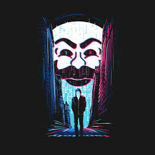

<ion-side-menus enable-menu-with-back-views="false">
    <ion-side-menu-content>
        <ion-nav-bar class="bar-stable">
            <ion-nav-back-button>
            </ion-nav-back-button>

            <ion-nav-buttons side="left">
                <button class="button button-icon button-clear ion-navicon" menu-toggle="left">
                 </button>
            </ion-nav-buttons>
        </ion-nav-bar>
        <ion-nav-view name="menuContent"></ion-nav-view>
    </ion-side-menu-content>

    <ion-side-menu side="left">


        <ion-header-bar class="bar-stable">

            <h1 class="title">

                Hacker Quest
            </h1>
        </ion-header-bar>
        <ion-content>
            <ion-list>

                <ion-item menu-close class="user-bar">
                    
                    <p class="nome">Jhones William</p>
                </ion-item>


                <!-- <ion-item menu-close ng-click="login()">
          Login
        </ion-item> -->
                <ion-item menu-close href="#/app/pratice">
                    <i class="icon ion-code-working"></i>
                    Praticar
                </ion-item>
                <ion-item menu-close href="#/app/ranking">
                    <i class="icon ion-trophy"></i>
                    Ranking
                </ion-item>
                <ion-item menu-close href="#/app/settings">
                    <i class="icon ion-settings"></i>
                    Configurações
                </ion-item>
            </ion-list>
        </ion-content>
    </ion-side-menu>
</ion-side-menus>